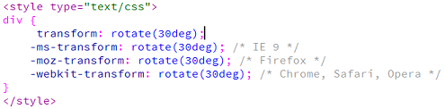
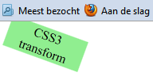
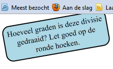
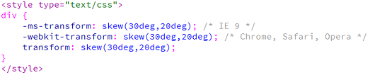
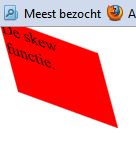
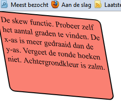
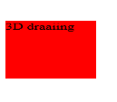

Met CSS3 is het nu ook mogelijk om divisies en objecten te draaien. Dit kan in 2D en 3D. Voor dergelijke veranderingen moet soms de prefix van de browser worden aangesproken. Elke browser heeft een andere manier om deze aan te spreken, behalve Chrome, Safari en inmiddels Opera, die gebruiken dezelfde. Het lastige hiervan is dat je dus meerdere malen dezelfde regel code moet programmeren, voor elke (verouderde) webbrowser.
#57E3D6
#3F6
#FF9
#F33
Transform
| Property | |||||
|---|---|---|---|---|---|
| transform | 10.0 9.0 -ms- |
36.0 4.0 -webkit- |
16.0 3.5 -moz- |
3.2 -webkit- | 23.0 15.0 -webkit- 12.1 10.5 -o- |
Internet Explorer maakt gebruik van de prefix -ms-. FireFox van -moz-. Chrome en Safari van -webkit- en Opera van -o-. Je ziet dus in het overzicht hierboven dat voor IE8 transform niet werkt, IE9 alleen met prefix en vanaf IE10 de prefix niet meer nodig is. Een voorbeeld van het gebruik hiervan, bij de optie transform, zie je in voorbeeld 4-1.
| transform | |
| Rotate | Het draaien van divisies. |
| Translate | Het verplaatsen van de divisie t.o.v. de originele plaats. Niet logisch om te doen omdat je dan met positionering in de war kan komen. |
| Scale | Het vergroten van divisies. |
| Skew | Het draaien van zowel de x als de y-as. |
| Matrix | Het combineren van alle bovenstaand. (geavanceerd) |
| Voorbeeld 4-1 |
|  |
Je ziet dus dat je eerst gewoon de CSS optie (transform) benoemd en daarna per verschillende browser dezelfde optie met de juiste toevoeging moet toevoegen. Een hoop extra werk wat helaas niet anders op te lossen is. Echter worden de browsers steeds nieuwer en hoeven steeds minder prefixen worden gebruikt. Je kan er al programmeur zelf voor kiezen welke browsers je wel en niet ondersteund. In de rest van dit lesmateriaal gaan we steeds uit van geen prefix en de -webkit-. Dit om een hoop programmeer werkt te besparen.
Transform werkt met deg (degrees, graden). Dus niet met pixels.
| Opdracht 1: rotate |
Maak een nieuwe HTML5 pagina aan.
Sla het bestand op als Opdracht4-1.html. Test het in verschillende webbrowsers. Je pagina moet er dan steeds uitzien zoals in voorbeeld4-2. |
| Voorbeeld 4-2 |
|  |
| Opdracht 2: namaken |
Maak een nieuwe HTML5 pagina aan.
Sla het bestand op als Opdracht4-2.html. Test het in verschillende webbrowsers. |
| Voorbeeld 4-3 |
|  |
Naast de rotate functie kent transform ook nog de functie skew. Met skew kan je een divisie of object over zowel de x als de y-as laten draaien. Ook skew werkt met degrees. Bij skew moet je dus twee waardes invullen. De eerste geldt voor de x-as. De tweede voor de y-as. Dit zie je in voorbeeld 4-4.
| Voorbeeld 4-4 |
|  |
| Opdracht 3: skew |
Maak een nieuwe HTML5 pagina aan.
Sla het bestand op als Opdracht4-3.html. Test het in verschillende webbrowsers. Je pagina moet er dan steeds uitzien zoals in voorbeeld4-5. |
| Voorbeeld 4-5 |
|  |
| Opdracht 4: namaken |
Maak een nieuwe HTML5 pagina aan.
Sla het bestand op als Opdracht4-4.html. Test het in verschillende webbrowsers. Je pagina moet er dan steeds uitzien zoals in voorbeeld4-6. |
| Voorbeeld 4-6 |
|  |
3d transform
| Property | |||||
|---|---|---|---|---|---|
| transform | 10.0 | 36.0 12.0 -webkit- |
16.0 10.0 -moz- |
4.0 -webkit- | 23.0 15.0 -webkit- |
Zoals je hierboven ziet wordt 3D transform pas ondersteund vanaf Internet Explorer 10. Je hebt hier geen prefix voor nodig, enkel de -webkit- voor safari. Er zijn twee mogelijkheden om 3D te draaien. Over de x-as of over de y-as
| Transform 3D | |
| RotateX() | Het draaien over de x-as. Deze draai lijkt verticaal |
| RotateY() | Het draaien over de y-as. Deze draai lijkt horizontaal. |
De syntax is hetzelfde als de eerder behandelde transform. Ook nu werk je weer met degrees en niet met pixels.
| Let op: |
| Als je 90 of 270 graden draait zal de divisie onzichtbaar zijn! |
| Opdracht 5: rotateX |
Maak een nieuwe HTML5 pagina aan.
Sla het bestand op als Opdracht4-5.html. Test het in verschillende webbrowsers. Je pagina moet er dan steeds uitzien zoals in voorbeeld4-7. |
| Voorbeeld 4-7 |
|  |
| Opdracht 6: namaken |
Maak een nieuwe HTML5 pagina aan.
Sla het bestand op als Opdracht4-6.html. Test het in verschillende webbrowsers. |